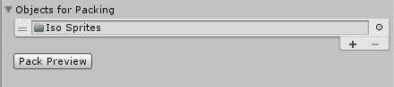
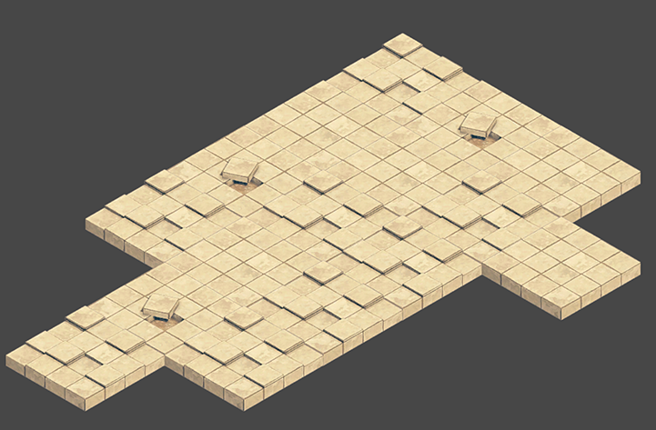

Tilemap Renderer Modes
The Tilemap Renderer component renders the Tilemap in the Scene. Unity creates Tilemaps with the Tilemap Renderer attached by default. The Tilemap Renderer can:
The Render Mode affects how the Tilemap Sprites are sorted when rendered.
Rendering in batches with Chunk Mode
Chunk Mode is the default rendering mode of the Tilemap Renderer:

When set to Chunk Mode, the Tilemap Renderer handles Sprites on a Tilemap in batches and renders them together. They are treated as a single sort item when sorted in the 2D Transparent Queue. This reduces the number of draw calls to improve overall performance, however other Renderers cannot be rendered in between any portion of the Tilemap which prevents other rendered Sprites being able to interweave with the Tilemap Sprites.
Using the Sprite Atlas for Sorting (Chunk Mode only)
In Chunk Mode, the Tilemap Renderer is not able to sort Tiles from multiple textures individually and does not render the Tile Sprites consistently (see example below).
Pack all the individual Sprites that make up the Tilemap into a single Sprite Atlas to solve this issue. To do this:
Create a Sprite Atlas from the Assets menu (go to: Atlas > Create > Sprite Atlas).
Add the Sprites to the Sprite Atlas by dragging them to the Objects for Packing list in the Atlas’ Inspector window. 
Click Pack Preview. Unity packs the Sprites into the Sprite Atlas during Play mode, and correctly sorts and renders them. This is only visible in the Editor during Play mode. 
Rendering individually with Individual Mode
In Individual Mode, the Tilemap Renderer sorts and renders the Sprites on a Tilemap with consideration of other Renderers in the Scene, such as the Sprite Renderers and Mesh Renderers. Use this mode if other Renderers interact with Sprites and objects on the Tilemap.
In this mode, the Tilemap Renderer sorts Sprites based on their position on the Tilemap and the sorting properties set in the Tilemap Renderer. For example, this allows a character Sprite to go in-between obstacle Sprites (see example below).
Using the same example in Chunk Mode, character Sprites may get hidden behind ground sprites:
Using Individual Mode may reduce performance as there is more overhead when rendering each Sprite individually on the Tilemap.
Custom Axis Sorting Mode for a Z as Y Tilemap in Individual Mode
To correctly sort and render Tile Sprites on an Isometric Z as Y Tilemap, the Transparency Sort Axis must be set to a Custom Axis. First set the Renderer Mode to ‘Individual Mode’ and go to to Edit > Settings > Graphics.
Set Transparency Sort Mode to Custom Axis, and set its Y-value to –0.26. Refer to the page on Creating an Isometric Tilemap for more information about the Transparency Sort Axis settings.
- Isometric Tilemaps added in 2018.3 NewIn20183